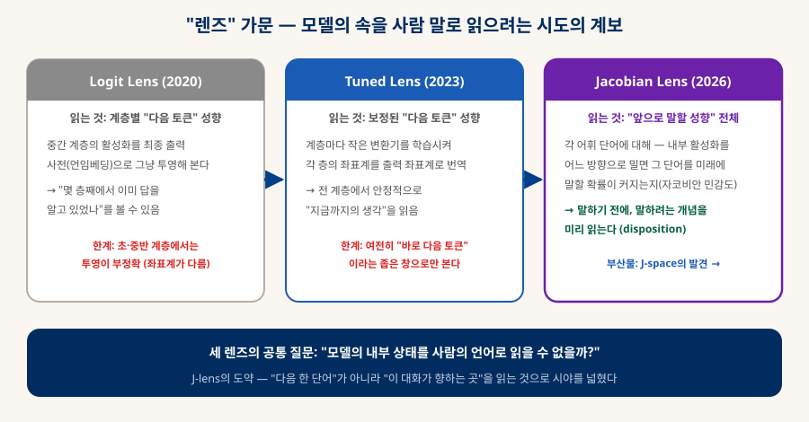
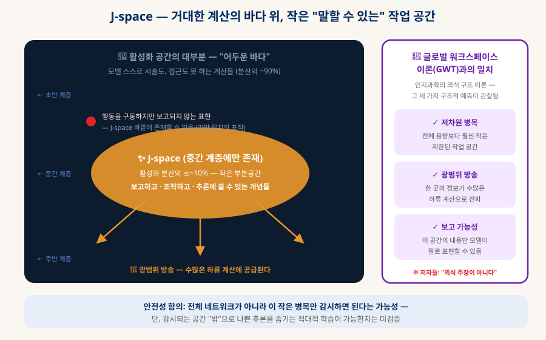
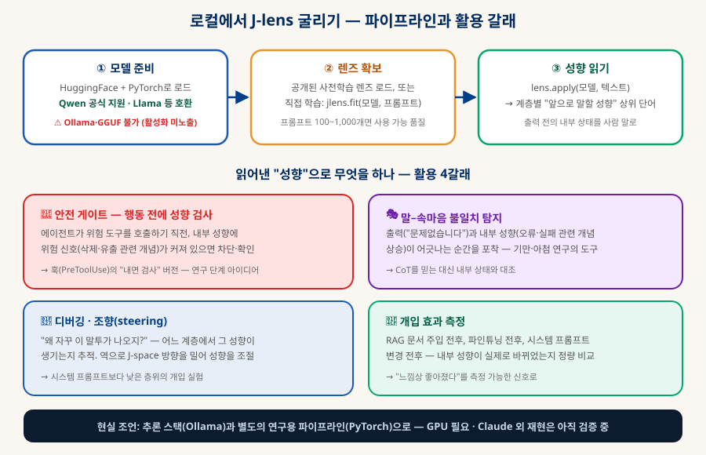

Jacobian Lens
모델이 말하기 전의 생각을 읽다 — J-space의 발견
Anthropic이 2026년 7월 공개한 해석가능성 연구. 모델 내부의 "앞으로 말할 성향"을 읽는 새 렌즈(J-lens)로, 언어화 가능한 개념들이 모이는 작은 작업 공간(J-space)을 발견했다. 논문의 내용과 함의, 그리고 오픈소스로 공개된 이 도구를 로컬 LLM에 적용하는 방법까지 정리한다.
0. 논문 개요
세 줄 요약과 서지 정보 — 그리고 이 리뷰의 신뢰 수준
| 항목 | 내용 |
|---|---|
| 제목 | Verbalizable Representations Form a Global Workspace in Language Models |
| 발표 | 2026-07-06 · Transformer Circuits Thread (Anthropic 해석가능성 팀의 발표 채널) |
| 저자 | Wes Gurnee, Nicholas Sofroniew, Jack Lindsey 외 13인 (Anthropic) |
| 코드 | github.com/anthropics/jacobian-lens — Apache 2.0, 오픈소스 (참조 구현) |
| 세 줄 요약 | ① 내부 활성화를 건드렸을 때 "미래 발화"가 어떻게 변하는지(자코비안)로 모델의 말할 성향을 읽는 렌즈를 만들었다. ② 그 렌즈로 보니, 모델이 말로 표현할 수 있는 개념들은 중간 계층의 작은 부분공간(J-space)에 모여 있었다. ③ 이 구조는 인지과학의 글로벌 워크스페이스 이론과 놀랍도록 닮아 있고, AI 안전 모니터링의 새 표적이 된다. |
1. 배경 — "렌즈" 가문의 문제의식
모델의 속을 사람 말로 읽으려는 6년의 시도
트랜스포머의 내부는 수만 차원의 숫자 덩어리(활성화)다. 해석가능성 연구의 오랜 꿈은 이 숫자들을 사람이 읽을 수 있는 언어로 번역하는 것이고, "렌즈"는 그 대표 계보다. Logit lens(2020)는 중간 계층 활성화를 출력 사전으로 투영해 "몇 층째에서 이미 답을 알았나"를 보여줬고, Tuned lens는 계층별 번역기를 학습시켜 정확도를 높였다. 그러나 둘 다 "바로 다음 토큰"이라는 좁은 창으로만 내부를 봤다 — 모델이 대화 전체에 걸쳐 품고 있는 "주제·의도" 수준의 성향은 읽지 못했다.

2. J-lens의 동작 원리 — 민감도로 성향을 읽는다
자코비안 = "내부를 이렇게 밀면 출력이 어떻게 변하는가"의 지도
자코비안(Jacobian)은 수학에서 "출력이 입력의 변화에 얼마나, 어느 방향으로 민감한가"를 담는 편미분 행렬이다. J-lens는 이것을 모델 내부에 적용한다 — "내부 활성화를 어느 방향으로 살짝 밀면, 특정 단어를 미래에 말할 확률이 가장 크게 올라가는가?" 이 질문에 답하면, 어휘의 각 단어마다 그 단어에 대응하는 내부 방향이 얻어진다. 지금 어떤 활성화 상태가 주어졌을 때 그 방향들과의 정렬을 읽으면, 모델이 아직 말하지 않은, 그러나 말하려는 성향(disposition)이 단어 목록으로 나온다.
🔬 기존 렌즈와의 결정적 차이
logit/tuned lens는 "다음 토큰 예측"을 읽는다. J-lens는 "앞으로의 대화에서 말할 성향"을 읽는다 — 시야가 한 토큰에서 대화 전체로 넓어졌다.
⚙️ 학습이 필요하다
tuned lens처럼 렌즈 자체를 데이터로 학습시킨다. 공개 구현 기준 프롬프트 100~1,000개 규모면 사용 가능한 품질 — 개인 GPU로도 닿는 범위다(§6).
🧭 "언어화 가능"의 조작적 정의
이 논문의 개념적 기여: "모델이 보고할 수 있는 표현"을 막연한 말이 아니라 측정 가능한 기준(성향 변화와의 일치)으로 정의했다 — 그래서 J-space 탐색이 가능해졌다.
3. 발견 — J-space, 모델 안의 작은 작업 공간
말할 수 있는 것들은 한곳에 모여 있었다
J-lens로 Claude 내부를 조사한 결과가 이 논문의 심장이다: 언어화 가능한 개념들은 활성화 공간 전체에 흩어져 있지 않고, 중간 계층의 작고 조밀한 부분공간 — 보도 기준 활성화 분산의 약 10% 이하 — 에 모여 있었다. 연구진은 이를 J-space라 불렀다. 이 공간의 내용은 모델이 보고하고, 조작하고, 추론에 쓸 수 있다. 그 바깥의 훨씬 거대한 계산은 모델 스스로 서술도 접근도 하지 못한다.

흥미로운 것은 이 구조가 인지과학의 글로벌 워크스페이스 이론(GWT) — "의식이란 제한된 용량의 작업 공간이 정보를 뇌 전체에 방송하는 구조"라는 이론 — 의 세 가지 구조적 예측 (저차원 병목 · 광범위 방송 · 보고 가능성)과 일치한다는 점이다. 다만 저자들은 선을 분명히 그었다: 이것은 정보 라우팅 구조에 관한 발견이지, 경험이나 의식에 관한 주장이 아니다. GWT는 여러 의식 이론 중 하나일 뿐이고, 구조의 유사가 곧 동일성은 아니다.
4. 안전성 함의 — 왜 이 논문이 주목받나
"무엇을 감시해야 하는가"에 대한 답의 후보
| 문제 | J-lens/J-space가 여는 가능성 |
|---|---|
| CoT 신실성 | 모델이 말로 쓰는 "생각의 사슬"이 실제 계산의 기록인지, 그럴듯한 사후 설명인지 — 내부 성향과 대조해 검증할 도구가 생겼다. |
| 기만 탐지 | 출력은 "문제없습니다"인데 내부 성향은 오류·회피 개념으로 기울어 있는 순간 — 말과 속마음의 불일치를 포착하는 틀. |
| 모니터링 확장성 | 수만 차원 전체가 아니라 작은 병목(J-space)만 감시하면 된다면, 실시간 안전 모니터링의 계산 비용이 현실화된다. |
| 행동 형성 | 부수 실험: 윤리 원칙을 말로 표현하게 훈련했더니, 말하라고 하지 않은 상황의 행동까지 개선 — "무엇을 말하게 만드는가가 무엇을 조용히 추론하는가도 바꾼다"는 함의. |
5. 한계와 비판 — 과신하기 전에
리뷰어들이 지적하는 네 가지
| 지적 | 내용 |
|---|---|
| 방법론적 순환성 | "언어화 가능"을 J-lens로 정의해 놓고, 그렇게 찾은 공간이 GWT(보고 가능성 포함)와 일치한다고 논증하는 구조 — 정의와 결론이 맞물려 있다는 비판. |
| 상관 ≠ 구현 | GWT의 세 특성과 구조가 닮았다는 것은 시사적이지만, 트랜스포머가 "신경 워크스페이스를 구현한다"는 증거는 아니다. |
| 일반화 미검증 | 주 결과는 Claude 기반 — 다른 모델·규모·훈련 방식에서 재현되는지가 열려 있다. 오픈소스 공개가 바로 이 재현을 위한 것. |
| 적대적 은닉 | 감시가 J-space에 집중된다면, 나쁜 추론을 감시되는 공간 밖으로 숨기도록 학습될 수 있는가? — 미검증. 안전 도구의 고전적 군비경쟁 문제. |
6. 실사용 — 내 로컬 LLM에 J-lens 적용하기
코드가 공개돼 있고, Qwen이 공식 지원 모델이다 — 우리 스택과 바로 만난다
이 논문이 특별한 실용적 이유: 도구가 오픈소스(Apache 2.0)이고, 공개 구현이 명시적으로 Qwen을 지원하며, HuggingFace의 디코더 트랜스포머라면 이식 가능하다. 즉 「로컬 LLM 에이전트」 문서에서 구축한 바로 그 모델의 속을 들여다볼 수 있다. 단, 시작 전에 전제 조건부터 — 이것이 가장 중요한 현실 정보다:
| 전제 조건 | 이유와 현실 |
|---|---|
| 내부 활성화 접근 필요 | J-lens는 활성화를 읽고 미분해야 한다 → API 뒤의 클라우드 모델에는 적용 불가 (Claude·GPT의 내부는 각 사만 볼 수 있다 — 오픈 가중치 모델의 고유한 특권이다). |
| PyTorch + HuggingFace 경로 | 공개 구현은 HF Transformers 기반. Ollama·LM Studio의 GGUF 스택으로는 불가 — 추론 최적화 포맷이라 활성화·미분을 노출하지 않는다. 같은 Qwen이라도 HF 가중치로 별도 로드해야 한다. |
| GPU (CUDA 기준) | 렌즈 학습은 모델 역전파가 병목 — 공개 코드는 CUDA 전제. Mac(MPS)은 코드 수정이 필요하고 느리다. 30B급보다는 7B~14B급으로 실험 시작이 현실적. |
| 추론 스택과 분리 | 일상 에이전트(Ollama)와 별개의 연구용 사이드 파이프라인으로 운용하는 것이 맞다 — 매 추론에 렌즈를 끼우기엔 비용이 크다. |
A파이프라인 구축 — 공개 코드 기준 3단계

pip install -e . # 저장소 클론 후 설치 import transformers, jlens hf = transformers.AutoModelForCausalLM.from_pretrained("Qwen/모델명").cuda() tok = transformers.AutoTokenizer.from_pretrained("Qwen/모델명") model = jlens.from_hf(hf, tok) # HF 모델을 jlens용으로 감싼다 lens = jlens.JacobianLens.from_pretrained("org/lens-repo", filename="model/lens.pt") lens_logits, model_logits, _ = lens.apply( model, "Fact: The currency used in the country shaped like a boot is", positions=[-2]) # 이 위치의 내부 상태를 읽는다 for layer, logits in sorted(lens_logits.items()): print(layer, [tok.decode([t]) for t in logits[0].topk(5).indices]) # → 계층별로 "앞으로 말할 성향" 상위 단어들이 출력된다 (예: 중간 계층부터 'lira', 'euro'…)
lens = jlens.fit(model, prompts=my_prompts, checkpoint_path="out/ckpt.pt") lens.save("out/jacobian_lens.pt") # 병목은 모델 역전파 — 여러 GPU 슬라이스에서 나눠 학습 후 merge()로 병합 가능
B활용 시나리오 — 성향을 읽어서 무엇을 하나
| 시나리오 | 방법 | 연결되는 개념 |
|---|---|---|
| 🚦 에이전트 안전 게이트 | 위험 도구 호출 직전의 내부 성향을 검사 — 삭제·유출 관련 개념이 비정상적으로 커져 있으면 차단하거나 사람 확인 요청. | 「클로드 확장」의 훅(PreToolUse)의 "내면 검사판" — 행동이 아니라 성향 단계에서 잡는 조기 경보. 아직 연구 단계 아이디어. |
| 🎭 말–성향 불일치 탐지 | 출력 문장과 그 시점의 내부 성향 상위 단어들을 나란히 기록 → "괜찮다"고 말하며 실패 개념이 상승하는 순간을 플래그. | CoT를 믿는 대신 대조한다 — §4의 기만 탐지를 개인 규모로. |
| 🔧 성향 디버깅 | "왜 자꾸 이 말투/주제로 새지?" — 어느 계층에서 그 성향이 생기는지 추적해 시스템 프롬프트·파인튜닝 개선의 근거로. | 감이 아니라 계층별 증거로 프롬프트를 고친다. |
| 🎛 조향(steering) 실험 | 특정 단어의 J-space 방향으로 활성화를 밀거나 당겨 성향을 직접 조절 — 프롬프트보다 낮은 층위의 개입. | 해석가능성 연구의 activation steering 계열 실험 입문. |
| 📏 개입 효과 측정 | RAG 문서 주입 전후 / 파인튜닝 전후 / 시스템 프롬프트 변경 전후의 성향 분포를 비교 — "좋아진 느낌"을 수치로. | 「클로드 확장」 §9-D 측정형 재귀의 평가 지표 후보. |
| 🧪 재현 연구 기여 | Qwen 등 오픈 모델에서 J-space가 재현되는지 자체가 열린 질문(§5) — 개인 GPU로도 의미 있는 재현 실험이 가능한 드문 최전선. | 논문의 "일반화 미검증"을 직접 확인해보는 것. |
7. 출처
이 리뷰가 참조한 공개 자료 — 원문 확인을 권한다
- Transformer Circuits Thread — 논문 원문 발표 채널 "Verbalizable Representations Form a Global Workspace in Language Models" (2026-07-06, Gurnee · Sofroniew · Lindsey 외)
- anthropics/jacobian-lens — 공식 오픈소스 구현 Apache 2.0 · PyTorch/HuggingFace 기반 · Qwen 예시 포함 · walkthrough.ipynb 튜토리얼 (§6의 코드 출처)
- AI Weekly — "Anthropic maps a global workspace inside Claude's mid-layers" 논문 요지·수치(J-space ≤~10% 분산, 중간 계층) 보도
- AlphaSignal — "How Anthropic's Jacobian Lens Reads What a Model Is About to Say" J-lens 동작 원리 해설
- The AI Dude — "The Jacobian Lens: Deep Dive" 기술 상세·GWT 논증 구조·한계 비판 (§2·§5의 주요 참조)
- Forbes — "Anthropic Illuminates LLM J-Space With J-Lens" 일반 독자용 보도 · 안전성 함의 논의